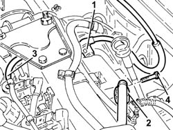
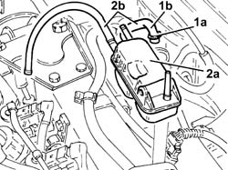

1060F50 fuel return manifold - r r
- Path
- Procedures > 10 ENGINE > 1060 DIESEL FUEL INJECTION > 1060F injectors and lines > 1060F50 fuel return manifold - r r
- Kind
- repair procedure (removal / refitting; the operation number is the code)
- Applies to
- all engines; all production periods
- Interactive page
- https://sloeber94.github.io/elrnDB-fDbl/en/#/2584493
Applies to: all engines; all production periods
 Removing
Removing
 Refitting
Refitting1. Disconnect the quick-release fitting on the fuel return pipe, fuel return manifold pipe side.
2. Disconnect the quick-release fitting on the fuel return pipe from the filter, fuel return manifold pipe side.
3. Disconnect the junction of the pipe from the injectors to the fuel recovery manifold.
4. Undo the bolts securing the fuel return manifold pipe to the air chamber.

Applies to: all engines; all production periods
1. Raise the fuel manifold pipe enough to loosen collar (1a) and disconnect the return pipe from pressure pump (1b), pressure pump side.
2. Remove fuel manifold pipe (2a) complete with pipes (2b).

Applies to: all engines; all production periods
Refitting
RemovingConnect the return pipe from the pressure pump, pressure pump side, and tighten the collar.
Place the fuel return manifold pipe back in its housing and fix it using the bolts to the air chamber
Connect the joint of the pipe from the injectors to the fuel recovery manifold.
Connect the quick-release fitting for the fuel return pipe from the filter, fuel manifold pipe side.
Connect the quick-release fitting for the front fuel supply pipe, fuel manifold pipe side.
Topics that link to this page (13)
- 1016C10 cylinder head - r + r and replace gasket
- 1060E10 pressure pump - r r
- 1060F10 fuel injectors
- 1060F20 pressure pump/manifold pipe - r r
- 1060F30 fuel delivery manifold - r r
- 1060F34 lines to injectors - r r
- 1060F36 lines to injectors - r r
- 1060G70 vacum tank for controlling engine air intake r r
- 1060G72 solenoid on vacuum tank for throttle body pneumatic valve r r
- 1060G90 diesel injection wiring harness - r r
- 4130B20 power steering pump r r
- 4130B40 outlet pipe from pump to power steering case r r
- 5520C10 glow plugs - r+r